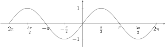
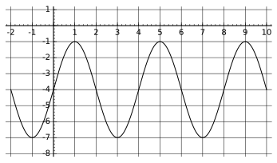

We start this section by investigating graphs of trigonometric functions. The following is the graph of \(y=\sin(x)\)

Figure7.1.
Note that the maximum value of the sine curve can take is \(1\) and the minimum value is \(-1\text{.}\) The range of the sine function is \([-1,1]\text{.}\) The amplitude represents half the distance between the maximum and minimum values of the function and thus it is equal to \(1\text{.}\)
Task7.2.
We will investigate how the variable \(a\) in the general form
What happens as \(a\) increases from \(1\text{?}\)
What happens as \(a\) decreases from \(1\) to \(0\text{?}\)
What is the relationship between \(a\) and the amplitude?
The mid-line of the sine curve is the horizontal line that runs exactly in the middle of the maximum and the minimum of the curve. Thus the mid-line is \(y=0\text{.}\)
Task7.3.
We will investigate how the variable \(k\) in the general form
What happens as \(k\) increases from \(0\text{?}\)
What happens as \(k\) decreases from \(0\text{?}\)
What is the relationship between \(k\) and the midline?
The period is the horizontal length of one cycle of the sine curve (such as from one peak to the next peak). The period of the sine curve is \(2\pi\text{.}\)
Task7.4.
We will investigate how the variable \(b\) in the general form
You cannot directly see \(b\) on the sine curve but \(b\) does affects the period. Using the above table, can you come up with a formula that determines the period of the sine curve given the value of \(b\text{.}\) In reverse, if you know the the period of the sine curve, how can you find the value of \(b\text{?}\)
Task7.6.
At the end, we will investigate how the variable \(h\) in the general form
Go to the link https://www.desmos.com/calculator/mka32cuaa8 5 . Find out the relationships between \(a,b,h,k\) and the amplitude, the mid-line, the period and the horizontal shift of the cosine curve.
Task7.9.
The following graph is a graph of a trigonometric function.

Figure7.10.
Write a function equation for the function of the form \(a\sin(b(x-h))+k\text{.}\)
Write a function equation for the function of the form \(a\cos(b(x-h))+k\text{.}\)
We now move to discuss inverse trigonometric functions. We started with the inverse sine function.
Definition7.11.
The inverse sine function \(y=\arcsin(x)\) if \(\sin(y)=x\) where \(-1 \leq x \leq 1\) and \(-\frac{\pi}{2} \leq y \leq \frac{\pi}{2}\text{.}\) The domain of \(y=\arcsin(x)\) is \([-1,1]\text{,}\) and the range is \([-\frac{\pi}{2},\frac{\pi}{2}]\text{.}\)
The domain of the sine function is all real numbers and the range of the sine function is \([-1,1]\text{.}\) Notice that the domain of the inverse sine function is \([-1,1]\) but the range is \([-\frac{\pi}{2},\frac{\pi}{2}]\text{,}\) not all real numbers.
Task7.12.
Without using the calculator, evaluate each of the expressions: \(\arcsin(-\frac{1}{2})\text{,}\)\(\arcsin(\frac{\sqrt{3}}{2})\text{,}\)\(\arcsin(-2)\text{.}\)
Definition7.13.
The inverse cosine function \(y=\arccos(x)\) if \(\cos(y)=x\) where \(-1 \leq x \leq 1\) and \(0 \leq y \leq \pi\text{.}\) The domain of \(y=\arccos(x)\) is \([-1,1]\text{,}\) and the range is \([0,\pi]\text{.}\) The inverse tangent function \(y=\arctan(x)\) if \(\tan(y)=x\) where \(-\infty \leq x \leq \infty\) and \(-\frac{\pi}{2} \leq y \leq \frac{\pi}{2}\text{.}\) The domain of \(y=\arctan(x)\) is \((-\infty,\infty)\text{,}\) and the range is \([-\frac{\pi}{2},\frac{\pi}{2}]\text{.}\)
Task7.14.
Without using the calculator, evaluate each of the expressions: \(\arccos(\frac{\sqrt{2}}{2})\text{,}\)\(\arctan(0)\text{,}\)\(\arctan(-1)\text{.}\)
Recall that for any function \(f\) that has an inverse function \(f^{-1}\text{,}\) we have \(f(f^{-1}(x))=x\) and \(f^{-1}(f(x))=x\text{.}\) One caveat is that these formulas are only true if \(x\) is the correct domain.
Task7.15.
If possible, find the exact value of each expression.
\(\displaystyle \tan(\arctan(-5))\)
\(\displaystyle \arcsin(\sin(\frac{5\pi}{3}))\)
\(\displaystyle \cos(\arccos(\pi))\)
Now we look at how to evaluate compositions of trigonometric functions and inverse trigonometric functions that are not of the same origins.
Task7.16.
Let us find the exact value of the expression \(\tan(\arccos\frac{2}{3})\text{.}\)
First, let us call \(\arccos(\frac{2}{3})=\alpha\text{.}\) Create a right triangle such that one of the non-right triangles is \(\alpha\) and \(\cos(\alpha)=\frac{2}{3}\text{.}\)
Second, find out the value of \(\tan(\alpha)\text{.}\)
Third, find out the value of \(\tan(\arccos\frac{2}{3})\text{.}\)
Task7.17.
Find the exact value of \(\cos(\arcsin(-\frac{3}{5}))\text{.}\)
Note that by the definition of the basic six trigonometric functions, we have \(\cot(x) = \frac{1}{\tan(x)}\text{,}\)\(\sec(x) = \frac{1}{\cos(x)}\text{,}\) and \(\csc(x) = \frac{1}{\sin(x)}\text{.}\) These relationships between trigonometric functions are called trigonometric identities. Here "identities" stands for "equalities". Note that a trigonometric identity involves trigonometric functions of an arbitrary angle and not a specific angle. As a counterexample, \(\sin(\frac{\pi}{2}) = 1\) is not a trigonometric identity because it is about one specific angle \(\frac{\pi}{2}\text{.}\) The big question is that are there any other identities. How do we find out?
Task7.18.
Look at Task 6.11. Can you find some trigonometric identities? If so, write down the trigonometric identities.
Now look at the trigonometric identities that you discovered in the last part, replace the trigonometric functions in the trigonometric identities with the definition of the trigonometric functions. (If you don’t remember the definition, go back to the last unit to review them.) Then try to justify that the trigonometric identities are true. (This is called a proof!)
In order to prove a trigonometric identity, we can use other trigonometric identities that have been established. The more identities that we have established, the larger our toolbox will be. When trying to prove a trigonometric identity, start working with the side that is more than complicated than the other. This allows you to manipulate the expression using algebra to get the simpler form.